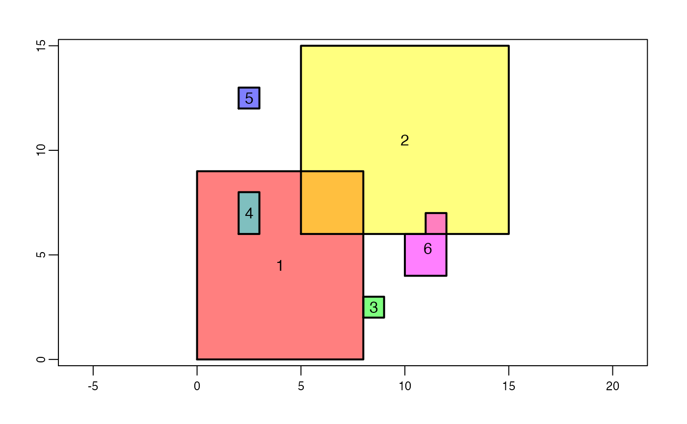
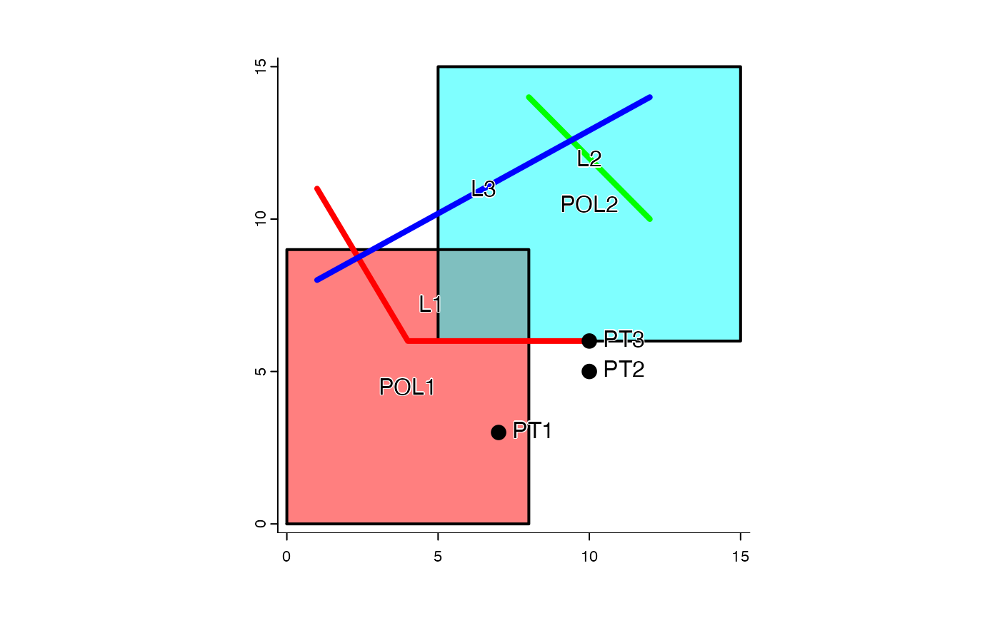

Spatial relationships between geometries
relate.Rdrelate returns a logical matrix indicating the presence or absence of a specific spatial relationships between the geometries in x and y.
is.related returns a logical vector indicating the presence or absence of a specific spatial relationships between x and any of the geometries in y
Usage
# S4 method for class 'SpatVector,SpatVector'
relate(x, y, relation, pairs=FALSE, na.rm=TRUE)
# S4 method for class 'SpatVector,missing'
relate(x, y, relation, pairs=FALSE, na.rm=TRUE)
# S4 method for class 'SpatVector,SpatVector'
is.related(x, y, relation)Arguments
- x
SpatVector or SpatExtent
- y
missing or as for
x- relation
character. One of "intersects", "touches", "crosses", "overlaps", "within", "contains", "covers", "coveredby", "disjoint". Or a "DE-9IM" string such as "FF*FF****". See wikipedia or geotools doc
- pairs
logical. If
TRUEa two-column matrix is returned with the indices of the cases where the requested relation isTRUE. This is especially helpful when dealing with many geometries as the returned value is generally much smaller- na.rm
logical. If
TRUEandpairs=TRUE, geometries inxfor which there is no related geometry inyare omitted
Examples
# polygons
p1 <- vect("POLYGON ((0 0, 8 0, 8 9, 0 9, 0 0))")
p2 <- vect("POLYGON ((5 6, 15 6, 15 15, 5 15, 5 6))")
p3 <- vect("POLYGON ((8 2, 9 2, 9 3, 8 3, 8 2))")
p4 <- vect("POLYGON ((2 6, 3 6, 3 8, 2 8, 2 6))")
p5 <- vect("POLYGON ((2 12, 3 12, 3 13, 2 13, 2 12))")
p6 <- vect("POLYGON ((10 4, 12 4, 12 7, 11 7, 11 6, 10 6, 10 4))")
p <- rbind(p1, p2, p3, p4, p5, p6)
plot(p, col=rainbow(6, alpha=.5))
lines(p, lwd=2)
text(p)

## relate SpatVectors
relate(p1, p2, "intersects")
#> [,1]
#> [1,] TRUE
relate(p1, p3, "touches")
#> [,1]
#> [1,] TRUE
relate(p1, p5, "disjoint")
#> [,1]
#> [1,] TRUE
relate(rbind(p1, p2), p4, "disjoint")
#> [,1]
#> [1,] FALSE
#> [2,] TRUE
## relate geometries within SpatVectors
# which are completely separated?
relate(p, relation="disjoint")
#> [,1] [,2] [,3] [,4] [,5] [,6]
#> [1,] FALSE FALSE FALSE FALSE TRUE TRUE
#> [2,] FALSE FALSE TRUE TRUE TRUE FALSE
#> [3,] FALSE TRUE FALSE TRUE TRUE TRUE
#> [4,] FALSE TRUE TRUE FALSE TRUE TRUE
#> [5,] TRUE TRUE TRUE TRUE FALSE TRUE
#> [6,] TRUE FALSE TRUE TRUE TRUE FALSE
# which touch (not overlap or within)?
relate(p, relation="touches")
#> [,1] [,2] [,3] [,4] [,5] [,6]
#> [1,] FALSE FALSE TRUE FALSE FALSE FALSE
#> [2,] FALSE FALSE FALSE FALSE FALSE FALSE
#> [3,] TRUE FALSE FALSE FALSE FALSE FALSE
#> [4,] FALSE FALSE FALSE FALSE FALSE FALSE
#> [5,] FALSE FALSE FALSE FALSE FALSE FALSE
#> [6,] FALSE FALSE FALSE FALSE FALSE FALSE
# which overlap (not merely touch, and not within)?
relate(p, relation="overlaps")
#> [,1] [,2] [,3] [,4] [,5] [,6]
#> [1,] FALSE TRUE FALSE FALSE FALSE FALSE
#> [2,] TRUE FALSE FALSE FALSE FALSE TRUE
#> [3,] FALSE FALSE FALSE FALSE FALSE FALSE
#> [4,] FALSE FALSE FALSE FALSE FALSE FALSE
#> [5,] FALSE FALSE FALSE FALSE FALSE FALSE
#> [6,] FALSE TRUE FALSE FALSE FALSE FALSE
# which are within (not merely overlap)?
relate(p, relation="within")
#> [,1] [,2] [,3] [,4] [,5] [,6]
#> [1,] TRUE FALSE FALSE FALSE FALSE FALSE
#> [2,] FALSE TRUE FALSE FALSE FALSE FALSE
#> [3,] FALSE FALSE TRUE FALSE FALSE FALSE
#> [4,] TRUE FALSE FALSE TRUE FALSE FALSE
#> [5,] FALSE FALSE FALSE FALSE TRUE FALSE
#> [6,] FALSE FALSE FALSE FALSE FALSE TRUE
# do they touch or overlap or are within?
relate(p, relation="intersects")
#> [,1] [,2] [,3] [,4] [,5] [,6]
#> [1,] TRUE TRUE TRUE TRUE FALSE FALSE
#> [2,] TRUE TRUE FALSE FALSE FALSE TRUE
#> [3,] TRUE FALSE TRUE FALSE FALSE FALSE
#> [4,] TRUE FALSE FALSE TRUE FALSE FALSE
#> [5,] FALSE FALSE FALSE FALSE TRUE FALSE
#> [6,] FALSE TRUE FALSE FALSE FALSE TRUE
all(relate(p, relation="intersects") ==
(relate(p, relation="overlaps") |
relate(p, relation="touches") |
relate(p, relation="within")))
#> [1] FALSE
#for polygons, "coveredby" is "within"
relate(p, relation="coveredby")
#> [,1] [,2] [,3] [,4] [,5] [,6]
#> [1,] TRUE FALSE FALSE FALSE FALSE FALSE
#> [2,] FALSE TRUE FALSE FALSE FALSE FALSE
#> [3,] FALSE FALSE TRUE FALSE FALSE FALSE
#> [4,] TRUE FALSE FALSE TRUE FALSE FALSE
#> [5,] FALSE FALSE FALSE FALSE TRUE FALSE
#> [6,] FALSE FALSE FALSE FALSE FALSE TRUE
# polygons, lines, and points
pp <- rbind(p1, p2)
L1 <- vect("LINESTRING(1 11, 4 6, 10 6)")
L2 <- vect("LINESTRING(8 14, 12 10)")
L3 <- vect("LINESTRING(1 8, 12 14)")
lns <- rbind(L1, L2, L3)
pts <- vect(cbind(c(7,10,10), c(3,5,6)))
plot(pp, col=rainbow(2, alpha=.5))
text(pp, paste0("POL", 1:2), halo=TRUE)
lines(pp, lwd=2)
lines(lns, col=rainbow(3), lwd=4)
text(lns, paste0("L", 1:3), halo=TRUE)
points(pts, cex=1.5)
text(pts, paste0("PT", 1:3), halo=TRUE, pos=4)

relate(lns, relation="crosses")
#> [,1] [,2] [,3]
#> [1,] FALSE FALSE TRUE
#> [2,] FALSE FALSE TRUE
#> [3,] TRUE TRUE FALSE
relate(lns, pp, relation="crosses")
#> [,1] [,2]
#> [1,] TRUE FALSE
#> [2,] FALSE FALSE
#> [3,] TRUE TRUE
relate(lns, pp, relation="touches")
#> [,1] [,2]
#> [1,] FALSE TRUE
#> [2,] FALSE FALSE
#> [3,] FALSE FALSE
relate(lns, pp, relation="intersects")
#> [,1] [,2]
#> [1,] TRUE TRUE
#> [2,] FALSE TRUE
#> [3,] TRUE TRUE
relate(lns, pp, relation="within")
#> [,1] [,2]
#> [1,] FALSE FALSE
#> [2,] FALSE TRUE
#> [3,] FALSE FALSE
# polygons can contain lines or points, not the other way around
relate(lns, pp, relation="contains")
#> [,1] [,2]
#> [1,] FALSE FALSE
#> [2,] FALSE FALSE
#> [3,] FALSE FALSE
relate(pp, lns, relation="contains")
#> [,1] [,2] [,3]
#> [1,] FALSE FALSE FALSE
#> [2,] FALSE TRUE FALSE
# points and lines can be covered by polygons
relate(lns, pp, relation="coveredby")
#> [,1] [,2]
#> [1,] FALSE FALSE
#> [2,] FALSE TRUE
#> [3,] FALSE FALSE
relate(pts, pp, "within")
#> [,1] [,2]
#> [1,] TRUE FALSE
#> [2,] FALSE FALSE
#> [3,] FALSE FALSE
relate(pts, pp, "touches")
#> [,1] [,2]
#> [1,] FALSE FALSE
#> [2,] FALSE FALSE
#> [3,] FALSE TRUE
relate(pts, lns, "touches")
#> [,1] [,2] [,3]
#> [1,] FALSE FALSE FALSE
#> [2,] FALSE FALSE FALSE
#> [3,] TRUE FALSE FALSE